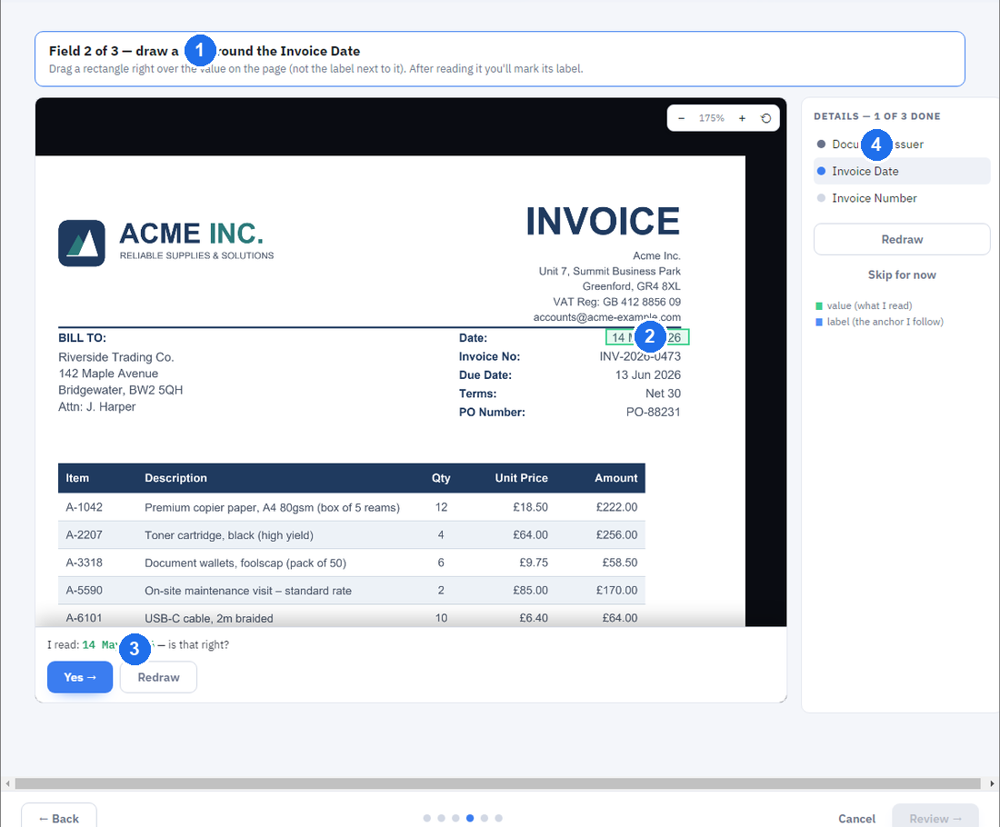

Templates & Learning
Scan Finder gets better the more you use it. When you confirm documents, it quietly learns where each supplier puts the important details — so next time, it reads them more accurately on its own.
How learning works (in plain English)
Every time you confirm a document, Scan Finder remembers what a good result looks like for that kind of paperwork. Over a few documents from the same supplier or layout, it builds up a picture of where the date, the reference and the other fields usually sit.
You don't have to do anything special for this — it happens automatically as you review and file. But for a brand-new or tricky layout, you can give it a head start by teaching it.
Teaching is entirely optional. Scan Finder works without it — teaching simply helps it read an unusual layout correctly from the very first document.
Which should I use?
There are three ways to teach Scan Finder — you'll mostly need just the first two. The diagram matches the list below.
- Teach a single field (the ⊕ in Review) — point out where one field's value sits. Scan Finder learns it for this supplier and reads that field correctly from then on, on every future document. The quickest way to train Scan Finder, one field at a time.
- Teach a whole document (Teach a document) — show Scan Finder a brand-new layout all at once: point out every field on one document, and it recognises similar documents automatically from then on.
- Fine-tune a layout (the Template Wizard in Review — advanced) — pin fields precisely on a recurring layout. Use this only when a field keeps coming out wrong on a crammed or tricky document; most of the time, teaching a field with the ⊕ is enough.
If Scan Finder ever learns something wrong, nothing is permanent. An admin can review and undo it in Settings → Learning Recovery — reassign or clear what it learned for a supplier or document type. It's all reversible, so you can teach freely without worrying about a mistake.
Teach a document
This is a friendly, step-by-step wizard for showing Scan Finder a new layout. You point out each field by drawing a box around its value, and Scan Finder reads it back to you live.
- From the home screen, click Teach a document.
- Choose one of your scanned documents to learn from.
- Pick or create the document type (for example "Invoice"), and confirm its main number and date fields in plain language.
- For each field, draw a box around its value on the document. Scan Finder shows you what it reads, so you can see it's correct.
- Review and finish. Scan Finder now recognises similar documents automatically.

The Template Wizard and manual mapping (admin)
Inside the Review window, admins have a Template Wizard for fine-tuning where a field's value sits on a particular layout. This is the more advanced cousin of "Teach a document".
- Use it when a specific field on a recurring layout keeps coming out wrong, and you want to pin exactly where its value is.
- A field you map by hand takes priority over Scan Finder's automatic guess — as long as the value it finds there makes sense for that field. If it doesn't, Scan Finder falls back to its normal reading.
- The Template Manager (in Settings) lets admins review the layouts Scan Finder has learned.
For most users, simply confirming documents accurately is all the "teaching" that's needed.
See how filed documents are organised and found in Search & Filing.